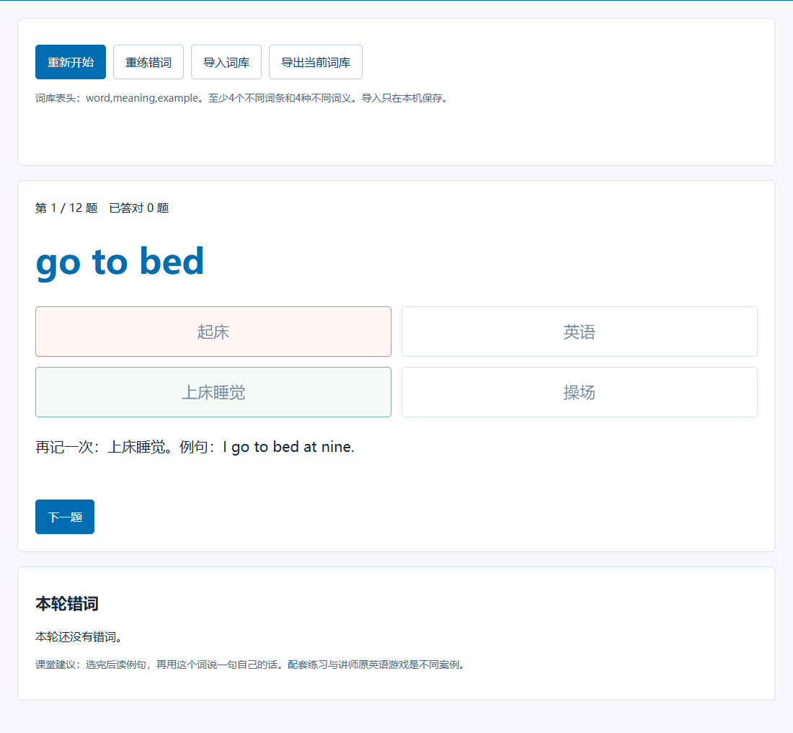

英语课堂互动游戏
把词库做成可投影、可练习的英语小工具。


复制到WorkBuddy
请用附件词库制作一个可离线打开的HTML英语词义选择练习。每题给4个中文选项，答后显示词义和例句，结束后展示得分和错词。支持错词重练、重新开始和导入CSV词库，一题计分一次。界面适合五年级课堂投影和键盘操作。
复现方法
- 上传词库，复制提示词生成HTML，保存后在浏览器打开。
- 试答几题，修改反馈，再换一份词库试用。
使用要点
词义与例句正确；答对、答错和重练都能使用；换词库后题目随之改变。
扩展提示词
答错后显示鼓励语，并请学生用这个词说一句话。下一题由学生点击后继续。
适用与扩展
初中英语：改为语境选词和同义表达，加入上下文理解；语文：字词辨析；科学：术语与概念匹配；数学：口算与概念判断。